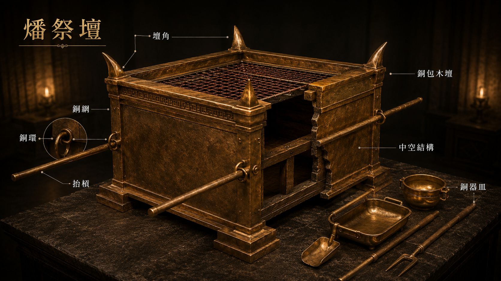

燔祭壇
The Altar of Burnt Offering
互動圖典
Specimen · 滑鼠停留Hover any numbered hot-spot to reveal bilingual details and scripture references.
圖像參考 · Reference Plate
Plate V
The Altar of Burnt Offering · 燔祭壇
經文 · Scripture
出埃及記 27:1–8 (全 8 節)中文 · 和合本
1「你要用皂莢木做壇。這壇要四方的，長五肘，寬五肘，高三肘。 2要在壇的四拐角上做四個角，與壇接連一塊；要用銅把壇包裹。 3要做盆，收去壇上的灰，又做鏟子、盤子、肉鍤子、火鼎；壇上一切的器具都用銅做。 4要為壇做一個銅網，在網的四角上做四個銅環。 5要把網安在壇四面的圍腰板以下，使網從下達到壇的半腰。 6又要用皂莢木為壇做槓，用銅包裹。 7這槓要穿在壇兩旁的環子內，用以抬壇。 8要用板做壇，壇是空的，都照著在山上指示你的樣式做。」
English · NIV
1"Build an altar of acacia wood, three cubits high; it is to be square, five cubits long and five cubits wide. 2Make a horn at each of the four corners, so that the horns and the altar are of one piece, and overlay the altar with bronze. 3Make all its utensils of bronze—its pots to remove the ashes, and its shovels, sprinkling bowls, meat forks and firepans. 4Make a grating for it, a bronze network, and make a bronze ring at each of the four corners of the network. 5Put it under the ledge of the altar so that it is halfway up the altar. 6Make poles of acacia wood for the altar and overlay them with bronze. 7The poles are to be inserted into the rings so they will be on two sides of the altar when it is carried. 8Make the altar hollow, out of boards. It is to be made just as you were shown on the mountain."